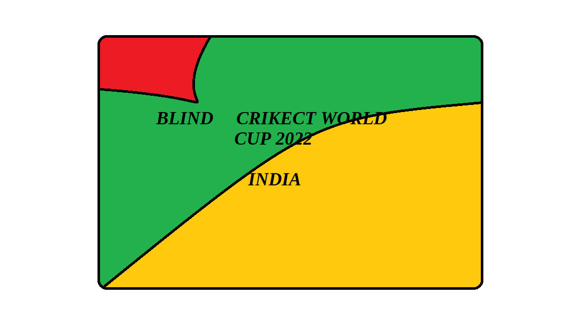

We will be gladly introducing you to the first cricket world cup for blind people!
Teams will be first going through Groupstage,Round of 16,Round of 32, Quarter-finals, Semi-fianls,Finals
Matches to be held in India.
Teams to play:
India
Australia
West Indies
Pakistan
Bangladesh
Namibia
Angola
Isreal
England
Fiji
USA
Canada

The time has come to rise till the top of the world for the justice for blind people!
TMC Applied©